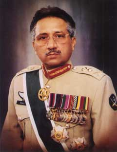
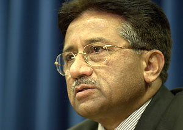
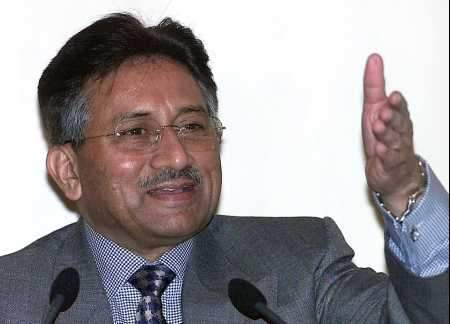
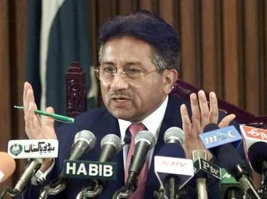
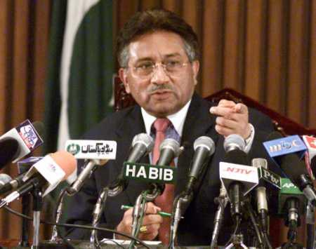

A Statement from Mukto-mona and Muktadhara
ON
Gen. Parvez Musharraf's visit in Bangladesh

Dear Freedom loving people all over the world,
On behalf of Mukto-mona (https://gold.mukto-mona.com ) and Muktadhara (http://www.muktadhara.net), we appeal to you to join us in this e-campaign to protest against the recent state visit of the Pakistani military dictator, General Pervez Musharraf, to Bangladesh.
The historical facts that occasion this protest campaign are:
1. The Pakistani occupation army committed a mass genocide in the erstwhile East Pakistan (now Bangladesh) and killed 3 million Bengalis in 1971. In the same instance, they raped and molested nearly 450,000 Bengali women. Pakistan has never apologized to us, the Bangladeshis, for the atrocity committed in 1971.
2. General Musharraf, as a member of the occupying Pakistani army in 1971, cannot avoid the responsibility of the massacre of the Bengalis of Bangladesh.
3. To accord the military dictator a state visit to a democratic country is a slap on the face of all freedom-loving people of Bangladesh and a great dishonor to the people of the host country who lost millions of their countrymen in 1971 for democracy and civil governance.
4. Pakistan has denied the responsibility of tens and thousands of Biharis who show allegiance to Pakistan and are stranded in Bangladesh living in U.N. run camps and elsewhere. Pakistan should help them to return back to Pakistan.We strongly believe that a Pakistani Head of the State can officially be invited to visit Bangladesh only after:
1. Pakistani Head of the State formally apologizes, on behalf of the Pakistani people, for the crimes committed by Pakistani army against the Bengalis in the liberation struggle of Bangladesh in 1971.
2. Pakistani Head of the State agrees, on principle, to compensate (as Japan did to Korea) for the massacre in 1971 and the damage done to the already fragile economic infrastructure of Bangladesh.
We urge our conscientious people to rise and demand an unconditional apology from the Pakistani junta for the genocide in 1971. We also strongly demand to our Government to resolve all outstanding issues with Pakistan regarding our liberation war before normalizing the relationship with them.
Thank you.
Lopa Tasneem (Mukto-mona)
Avijit Roy (Mukto-mona)
Tito Scohel (Muktodhara)
==================== READER'S COMMENT ==============================
Dear Mukto-monas,
Some of us started a campaign already to write against Pakistani military for
what they have done to our people in 1971. What a better opportunity to let your
voice be heard now in Dhaka where Gen. Musharraf will be landing in just two
days.
My article on Pak Army's atrocities in 1971 will be published in tomorrow's
editorial page of The Bangladesh Observer. I just saw that the BO folks have
posted my article in their electronic version of the paper a day earlier. Please
read my article and then decide for yourself whether you wanted to protest
against the Pak Army for their misdeeds in 1971. Please do write to the Daily
Star (dseditor@gononet.com), the Independent (info@independent-bangladesh.com) ,
and to The Bangladesh Observer (observer@shapla.net) and speak your mind. Let us
start a writing campaign so that the army of Pakistan and specifically Gen.
Musharraf knows that Bangalees are not amnesiac as far as the events of 1971 is
concerned.
Sincerely,
A.H. Jaffor Ullah
--------------------

Just Say - We Are So Sorry For Bangladesh
Genocide
Dr. A.H. Jaffor Ullah
PAKISTAN'S ex-CEO and newly "elected" President Gen. Pervez
Musharraf is expected to begin his maiden trip as chief of Pakistan on July 29,
2002. He is slated
to receive a red carpet welcome from Bangladesh's Prime Minister Mrs. Khaleda
Zia. It was reported in some newspapers that Gen. Musharraf has some friends
in Bangladesh who also attended NWFP's military academy located at Abotabaad.
Therefore, there will be a reunion at Hotel Sonarga where General Musharraf will
be staying. The bonhomous and old cadets of Bangalee extraction who had attended
the same military academy in the early sixties with General Musharraf will
throng at Hotel Sonarga to reacquaint with their old friend who made it good in
Pakistan. While the press and well-wishers of Pervez Musharraf will shower him
with accolades of all kinds, the question before many Bangalees would be the
following: Will he apologize for the misdeeds of Pakistani soldiers against
Bangalees in the grueling 9 months during 1971?
Without any question, the outcome of the year 1971 will go down in the annals of
Bangladesh and Pakistan's history as epoch-making events. The Bangalees
deservingly had established their nation sovereign and free from colonialism of
Punjabi oligarch of Pakistan from the ashes of a genocide by Pakistani soldiers.
The Pakistanis saw their pride and esteem going down the tube, their nations cut
into half, their 90,000 soldiers taken as POW to India, a change in government
from military to civilian, military demoralized, etc. Bangladesh as a nation has
suffered in the hands of not one but two despotic rulers. They saw their
founding father assassinated in cold blood, their fine constitution abrogated by
the action of military junta Maj. Gen. Ziaur Rahman, their nation pilfered by a
chameleon-like military President Gen. Ershad. However, they did not lose hope.
From utter hopelessness, democracy made its comeback into this alluvial land in
1990. Since then, Bangladesh had elected three governments all democratically
elected in succession. It is safe to say that democracy has established its
roots into Bangladesh soil and it is here to stay.
Pakistan is not so lucky as Bangladesh. Up until now, Pakistan was ravaged by
four military coup dtats. Democracy thrashed in Pakistan by the military over
and over again had received nothing but a bad rap. "Military knows what is
best for Pakistan." This kind of patronizing statement became a byword in
that unfortunate nation of about 140 million impoverished people. The military
had been always the final arbiter in Pakistan. They are the savior, guardian,
judge, jury, lawmaker, and what not. Fighting for Kashmir has become a linchpin
for Pakistani military. Thus, enormous sum of money is being spent to build up
military, nuclear bombs, navy, long and intermediate range antiballistic missile
to fight that Armageddon in which they expect to beat their mortal enemy the
India. As this charade goes on, the common people who are mostly impoverished
suffer endlessly. The country of Pakistan is in the state of bankruptcy. Had
this not for America in the aftermath of 9-11 terrorist action against America
and booting out of Talibans in Afghanistan, the nation of Pakistan would be in
serious trouble as far its financing is concerned. As for Gen. Pervez Musharraf,
he is a lucky person. The events of September 11, 2001, and America's foray into
Afghanistan had saved the Pakistani General. However, there is a price tag for
all this patronage by America. More and more, Gen. Musharraf had been alienated
by the alliances of clergies and fundamentalists in Pakistan. The future is very
shaky and no one really knows the final result of this tussle between the
General and the Mullahs. Under this ominous development Gen. Musharraf decided
to come to Bangladesh to rally support for his get tough policy with not only
the Mullahs back home but also with Indian ruling politicians to bring a
solution to perennial Kashmir problem.

For Bangalees though, neither of the problems Gen. Musharraf is facing at home
and abroad really matter much. They are more concerned with a long forgotten
issue, which is an issue of over due apology from the Pakistani military for
committing Bangladesh Genocide in 1971. Bangalees will never forget the
atrocities perpetrated by Pakistani army personnel who were stationed in
occupied Bangladesh. The soldiers could have disobeyed their officers and not
participate in the carnage. Scarcely, that was not the case. The army officers,
both junior and senior, religiously followed the orders from Rawalpindi
headquarters; they bloodied their hand by killing innocent Bangalees en masse
both in cities and in distant villages giving the military an infamy that will
be hard to efface. Being a junior officer in Pakistani military (did he
participate in the carnage in occupied Bangladesh? A smart question though!) he
must have "fond" memories of the dark days of 1971. Does Bangladesh
Genocide ring a bell into his head?

Bangalees should have every reason to be bitter about the killings of their own
folks during the 9 month period in 1971. According to academic work relating to
carnage in 1971 in Bangladesh the authors of many studies came up with the
casualty figure. The Gendercide website (http://gendercide.org/case_bangladesh.html)
maintains a separate section for Bangladesh Genocide in which they refer about
the work of Mr. R.J. Rummel who estimates that about 1 to 3 million Bangalees
simply perished into thin air in the hands of Pakistani military men. Others
however put this number closer to 3 million. Therefore, Bangladesh Genocide
ranks very high among the genocide committed in the twentieth century by many
nations. The Armenians until this day reminds the rest of the world that Turkish
government unleashed a genocidal force to annihilate Armenians. This happened
few years before the onset of WW I. During WW II, the invading Japanese force in
China killed tens of thousands of Chinese notably in Nanjing area. To make the
matter worse, the Japanese captured many Chinese women and turn them forcibly
into prostitution by calling them ‘pleasure women,' a wartime euphemism in
Japanese language for forced prostitution. Hitler's vile army also perpetrated a
wholesale carnage in Europe targeting the Jewish people. An estimated 6 million
Jews lost their life in the hands of Nazi and Nazi sympathizers. From these
examples one could discern that Bangladesh Genocide ranks high among worldwide
genocide of the last century.
One of the Japanese Prime Ministers of recent time has openly apologized for the
wrongdoing of their elders during WW II. The Germans also apologized for their
apathy when Jewish people were rounded up by Nazis all over Europe and they now
ask for forgiveness. However, that won't be the case for Pakistani army. The
vainglorious Pakistani army had never uttered even to this day a word of apology
to Bangalees. To illustrate the vainglory of Pakistani army, allow me to bring
these examples. The deposed PM of Pakistan, Mian Nawaz Sharif came to Dhaka on
an official trip sometime before his forcible removal from the office by Gen.
Musharraf. Mr. Sharif remarked in Dhaka that when he returns to Islamabad he
will raise this issue of apology with the army of Pakistan. However, the apology
never came. It was reported in the press later that although Nawaz Sharif was
ready to offer an apology, the ignoble senior army officers of Pakistan had
categorically rejected such move by the Prime Minister of Pakistan. If this
scribe is not off the mark, Gen. Musharraf was one of the top officers of
Pakistani military in the late nineties. What is the guarantee then that Gen.
Musharraf will wave the proverbial olive branch towards Bangalees and ask for
the forgiveness of our people for the gratuitous killing of Bangalees by
Pakistani army. Gen. Musharraf knows this for a fact that Pakistani army in
erstwhile East Pakistan burned villages after villages, desecrated many Hindu
mandirs, raped tens and thousands of Bangalee women following a scorched-earth
policy laid down by the vile gangs of Yahya, Tikka, Niazi, Gul Hassan, Hamid,
and many more Generals like them. Even then, Gen. Musharraf will remain mum on
this issue. Perhaps he will say something like this: atrocities were made
against non-Bengali citizens of Pakistan, too. He will also touch on
repatriation of stranded Pakistanis (read Biharis) in Bangladesh. However, if my
hunch is correct, then Gen. Musharraf will remain reticent about all the
killings, raping, and pillaging of Bangalees by the marauding army men belonging
to inglorious Pakistani army.

Gen. Musharraf could not have come to Bangladesh at a better
time than now. He had plenty of time ever since he took control of Islamabad and
rest of Pakistan in October 1999 to visit Bangladesh. His encounter with Sheikh
Hasina at the Millennium Meeting of the U.N. in New York was not a congenial
one. Therefore, he waited a little longer to make sure that a sympathetic crowd
would be there at the helm in Dhaka. Knowing the composition of politicians who
are managing Bangladesh at this time, there is a great deal of doubt whether
they would raise the issue of extracting an apology from Gen. Pervez Musharraf.
Undoubtedly, there will be a joint communiqué at the end of Gen. Musharraf's
trip to Bangladesh. Perhaps some trade agreement, expression of solidarity with
the Kashmiri folks, etc., would be announced but it is very doubtful whether
there will be any an offer of apology for the misdeeds of Pakistani soldiers in
1971. Gen. Musharraf may mention something to the effect that his government
will everything it could to repatriate the stranded Biharis in Bangladesh. He
will perhaps mention that it would be a costly business to repatriate the
Biharis who are now living in a squalor in U.N. run camps. He will also mention
that Pakistan scarcely have funds available for repatriation of Biharis. It is
coincidental that Gen. Musharraf's family also migrated to Pakistan bringing him
as a little boy after the partition of India in 1947 from Old Delhi. One
naturally expects him to be more sympathetic to the cause of stranded Biharis in
Bangladesh. However, everything will be business as usual and the Biharis who so
desperately want to migrate to Pakistan will be shown the proverbial carrot
whether these gullible folks realize it or not by now.
Gen. Musharraf will have all the time in the world to meet his old chumps in a
suite at Hotel Sonarga where he will be staying. It is doubtful, however,
whether he will visit the Liberation War Museum located at Segun Bagicha. For he
would have learned a thing or two about the supreme sacrifice our people have
made in 1971 to make this nation a free state. The depredating Pakistani
soldiers made our lives a living hell and in the process they turned the verdure
of land and made our alluvial soil a charnel house. By a sheer luck if Gen.
Musharraf would visit our Muktijuddha Jadughar (Liberation War Museum), he would
have seen a collection of bones that would remind him that international
scholars who specialize in genocide are not far off when they say that
Bangladesh Genocide ranks high up in the list in terms of casualty. Even then,
there will be no mention of casualty figures of 1971, there will be no olive
branch to offer to Bangalees, and there will not be any trip to Liberation War
Museum. This scribe will leave the job of assigning grades to Gen. Musharraf for
his maiden trip to Bangladesh. If Pakistan decided to keep mum for 31 long years
as far as Bangladesh Genocide is concerned, then, this time around there will be
no apology forthcoming from the visiting President of Pakistan. Our people in
Bangladesh will have to internalize our collective pain as Pakistanis would move
hubristically by internalizing the collective guilt of killing an astounding 3
million of their one-time countrymen.
(Dr. A.H. Jaffor Ullah contributes article regularly for this newspaper and he
writes from New Orleans, USA)
=============================================
Post your comment on Gen. Musharraf's visit in Bangladesh :